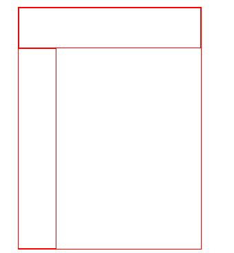

第一阶段第一周周测试卷
考生: 胡
考试编号: EXAM-20180529101921
试卷卷面总分: 100
通过分数: 60.0
单选题 (总共9题，每题4分)
1、下面选项中（ ）应用了行内样式。 -----(总第1题)
A.
<p class="style">
B.
<p style="color : red;">
C.
<p id="content">
D.
<p class="style1 style2">
多选题 (总共1题，每题4分)
1、根据以下的HTML代码：
<html> <head> <title>表格</title> <head> <body> <table border="1"> <tr> <td >1</td> <td >2</td> </tr> <tr> <td >3</td> </tr> </table> </body> </html> 对以上代码，以下描述正确的是（ ）。 -----(总第7题)
A.该网页内容的第一行显示“表格”
B.1和2的表格在同一列
C.1和2的表格在同一行
D.1和3的表格在同一列
判断题 (总共5题，每题4分)
1、“ ../ ”用于返回当前目录的上一级目录 ( );-----(总第8题)
A.对
B.错
上机题 (总共1题，每题40分)
1、在html页面中，完成一个界面，总宽1000px,内含左 右二块，如图，小区域的宽和高,颜色可自己定义，需要完成下面的效果，请完成代码效果如下图：-----(总第5题)

填空题 (总共2题，每题20分)
1、写出一个div宽900px 高220px 颜色为#ccc区域的代码-----(总第4题)
剩余时间：30:00
回到顶部
回到底部